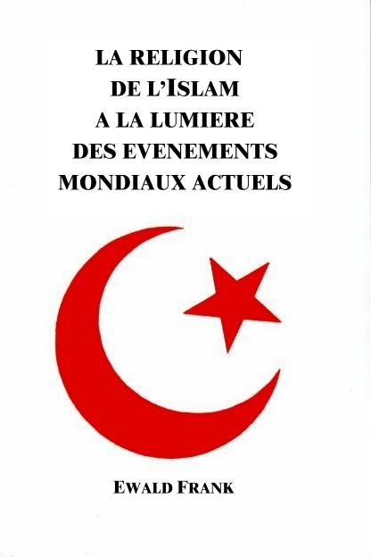
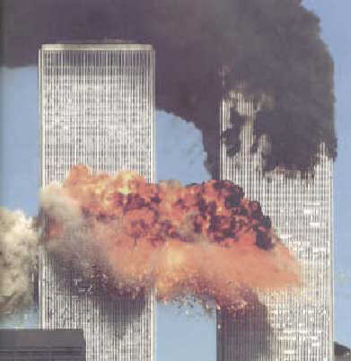
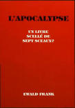
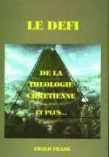

|

|
|
Titre
original de louvrage: Auteur: Traduit de lallemand. Tout droit de reproduction,même partiel, est réservé. Editeur |
LA
RELIGION DE
LISLAM A LA LUMIERE
DES EVENEMENTS MONDIAUX ACTUELS
Dans ce court exposé je men tiendrai à la règle dor: Toutes les choses donc que vous voulez que les hommes vous fassent, faites-les-leurs, vous aussi, de même (Mat. 7.12). En fin de compte nous sommes tous à la recherche de la Vérité qui devrait être partagée par tous les hommes de bonne volonté. Cependant, la Vérité Elle-même ne se trouve pas chez les hommes, mais bien uniquement auprès de Dieu, qui seul est le Véritable (Rom. 3.4). Le plus grand commandement devrait être de ne pas toucher à lhonneur de Dieu en Lui attribuant des choses qui tirent leur origine des hommes et non de Lui. Avec le respect dû envers toute croyance et toute religion, le monde a certainement encore le droit, suite aux derniers événements, dêtre informé au sujet de lIslam. Il ny a sur la terre, ou même dans lunivers, rien dont lexistence ne serait justifiée. Cela concerne également toutes les religions. Toute la création, bonne ou mauvaise, de même que les choses du domaine religieux, doivent être laissées à la responsabilité du Créateur, Lequel est le Juge suprême.
Depuis le 11 septembre 2001 lIslam est devenu dans les média, et même sur Internet, le thème N° 1. Les livres relatifs à ce sujet furent épuisés en lespace de quelques jours. Dans beaucoup de pays les mosquées, à loccasion de leur journée «portes ouvertes» pour les non-musulmans, ont eu un afflux de visiteurs comme jamais auparavant. Lhumanité doit se rendre compte que, depuis ce jour mémorable, le monde ne sera plus le même. Le trafic aérien est en crise dans le monde entier, également les divers secteurs de léconomie qui sont liés entre eux de façon internationale. De même le 7 octobre 2001, jour où les Etats-Unis ont lancé leur attaque militaire contre lAfghanistan, entrera également dans lhistoire. Beaucoup de personnes sont persuadées quil eut été préférable de réagir à la manière de Christ: Père, pardonne-leur, car ils ne savent pas ce quils font (Luc 23.34), et: Ne rendant à personne mal pour mal ne vous vengeant pas vous-mêmes, bien-aimés; mais laissez agir la colère, car il est écrit: A moi la vengeance; moi, je rendrai, dit le Seigneur (Rom. 12.17-19). Le 8 octobre 2001 le monde entier pouvait voir une vidéo dOsama Ben Laden et entendre sa déclaration: «La guerre sainte contre les Juifs et les Chrétiens a commencé Allah a béni un groupe de lavant-garde musulmane pour détruire lAmérique. Allah le bénisse et lui donne une place dans le ciel». Nous ne sommes pas surpris de cela, parce que la «guerre sainte» est réellement annoncée à lavance dans beaucoup de passages des prophéties bibliques. En présence des choses qui sont arrivées plusieurs craignent que les événements apocalyptiques naient déjà commencés. En Allemagne, quelques jours seulement après la terrible attaque sur les Etats-Unis, tous les exemplaires du Coran étaient déjà épuisés. Tous veulent sinformer personnellement sur le livre saint des Musulmans. Ceux qui réfléchissent un peu plus voudraient aussi en savoir davantage sur lenseignement de Mahomet. En de tels jours, riches en événements, la question définitive doit réellement être posée au fondateur de la religion concernée.
Lattaque des terroristes sur les Etats-Unis, comme lattaque contre les terroristes en Afghanistan, où ce sont toujours des innocents qui en souffrent, est encore à présent incompréhensible, tout simplement inconcevable. Osama Ben Laden et son organisation terroriste ont osé détruire le Centre Mondial du Commerce à New York. Les orgueilleux gratte-ciel, en lespace de 105 minutes, furent réduits en débris et en cendres. Dans cet enfer incompréhensible moururent des milliers de personnes, provenant denviron 60 nations. Lobjectif principal des terroristes, qui était la Maison Blanche, la résidence du Président des Etats-Unis dAmérique, de la plus grande nation sur la terre, fut cependant manqué. A seulement quelques mètres de là, lavion se précipita sur le Pentagone entraînant des centaines de militaires et demployés civils dans la mort. Lattaque programmée sur Camp David fut déjouée par les passagers qui attaquèrent ceux qui avaient détourné lavion. Jusquà ce jour-là les organisations terroristes islamistes avaient dirigé leurs attaques principalement contre Israël. Cependant ils ont à présent trouvé leur chemin au-delà de lAtlantique, et dès lors le monde entier prend conscience de leur existence réelle. La pratique de la terreur en divers pays était certainement connue, pourtant avec lattaque contre les Etats-Unis une nouvelle dimension a été donnée à toutes choses. Le président George W. Bush, dans son pacte anti-terrorisme, fait aussi entrer «dans son bateau» de ceux qui sont eux-mêmes absolument coupables de terrorisme.
Cela marque aussi un tournant dans le processus de paix au Proche-Orient, lequel influence les événements du temps de la fin. Ce qui est arrivé le 11 septembre 2001 a fait rester bouche bée lensemble des têtes pensantes de la terre, et il a introduit une ère nouvelle, tout particulièrement en Israël. Quavaient donc fait les milliers de personnes innocentes qui chaque jour gagnaient leur pain dans le Centre Mondial du Commerce? Quont fait les Etats-Unis à Ben Laden, aux Talibans, ou à une des autres nombreuses organisations terroristes islamistes? Tous ceux qui sont au courant de lhistoire récente savent quaprès la deuxième guerre mondiale, deux super-puissances apparurent. LEmpire Britannique avait disparu, lEmpire Allemand sétait écroulé et lEurope entière sétait retrouvée en ruine. Le monde fut partagé en Est et Ouest: dun côté lURSS, de lautre les Etats-Unis. La ligne de séparation sétendit au travers même de lAllemagne, et la divisa entre lAllemagne de lEst et lAllemagne de lOuest. Même Berlin, sa capitale, fut partagée en un secteur occidental et un secteur oriental.
Evidemment que pendant la «guerre froide» qui suivit, il y eut sans cesse des confrontations entre les deux super-puissances, comme par exemple la crise de Cuba et celle de Berlin, en 1960 et 1961. Lorsque les troupes soviétiques occupèrent lAfghanistan à la fin décembre 1979, le gouvernement des Etats-Unis en juin 1980 trouva nécessaire de décréter un embargo contre lURSS. Cest à ce moment là que la CIA, le service secret des Etats-Unis, pour opposer une résistance armée recruta et forma Ben Laden de même que le groupe des Talibans en tout 35 000 hommes venant de 43 pays islamiques. Toute laction était dabord dirigée contre les troupes soviétiques occupant le pays. Ceci coûta au gouvernement des Etats-Unis, dans les années 1980 du siècle passé, 3 milliards de dollars.
Comment Ben Laden en est-il arrivé à cette position anti-américaine, lui qui certainement nest pas prêt à mourir, mais qui, pourtant, fait former des jeunes gens pour des attentats suicides, en leur promettant le paradis, et pour leur famille quils laissent derrière eux il promet la sécurité matérielle, avant de les envoyer à la mort? Le premier essai dattentat se fit en 1998, lorsque les ambassades américaines à Nairobi (Kenya) et Dar-es-Salam (Tanzanie) explosèrent dans les airs. Cette fois-ci cest la capitale politique des Etats-Unis et le Centre Mondial du Commerce qui ont été les cibles. On ne peut pas se représenter quelle sorte de caractère, et de quelle brutalité il faut être animé pour assassiner les pilotes et ensuite diriger lavion avec tous ses occupants contre les tours du Centre Mondial du Commerce. Il faut se représenter cela: des pères et des mères innocents se trouvaient dans lavion et subirent une mort inattendue. Quelle sorte de tourments ont-ils dû subir au dernier moment de leur vie? Au total sont restés 15 000 orphelins. Il ny a pour les responsables de telles actions aucune excuse. Les services secrets qui travaillent à plein régime ont découvert des documents appartenant à 19 pirates de lair, dont 11 venaient de lArabie Saoudite, le pays dorigine de Mahomet et de lIslam, avec les dernières déclarations motivées par leur religion. A la lecture des paroles écrites au cours de leur dernière nuit par les pilotes candidats à la mort, comme par exemple: «Cette vie est terrible, mais celle dans le paradis, où nous irons demain, est pleine de fleurs, de ruisseaux et de gloire, où nous nous réjouirons pour toujours de la vie», surgit cette question justifiée: Quest-ce que dit véritablement Mahomet, cet homme en qui tous ces meurtriers croient comme étant leur prophète? Quenseigne le Coran sur le «Djihad» la «guerre sainte», le sixième et dernier pilier sur lequel lIslam fonde sa foi?
Conformément à la Surate LXVI, 9 les incrédules sont appelés des hypocrites et ils sont la cible directe du «Djihad».
«O Prophète! Fais la guerre aux infidèles et aux hypocrites, soit sévère à leur égard. La géhenne sera leur demeure. Quel détestable séjour!» (Surate LXVI, 9; cfr. IX, 41).
Selon la Surate XLIX, 15 la promptitude à combattre pour le «Djihad» est un signe distinctif de la véritable piété islamique. Elle est placée sur le même rang que la foi en Allah et dans le prophète Mahomet.
«Les vrais croyants sont ceux qui ont cru en Dieu (Allah) et à son apôtre, et qui ne doutent plus, qui combattent de leurs biens et de leur personne dans le sentier de Dieu (Allah). Ceux-là sont sincères dans leurs paroles» (Surate XLIX, 15).
Dans le «dialogue chrétien-islamique» sur Internet, nous trouvons ceci: «La tradition également tient le Djihad en grand estime lorsquelle dit: Le Djihad est une des portes pour le paradis», ou encore: «Le Djihad est un acte de pur don de soi à Allah».
La question suivante est: De quelle façon Ben Laden et les conducteurs religieux de lIslam, interprètent-ils et justifient-ils ce qui se trouve dans le Coran?
LE TEMPS DE MAHOMET
Mahomet est né en 570, il a donc vécu presque 600 ans après Christ. En 613 il a commencé sa mission à La Mecque. Après sa mort en 632 ses successeurs, et plus particulièrement Abu Bakr, commencèrent à répandre de toute leur force les enseignements quil avait laissés, car lenvoyé prétendait les avoir reçus de lange Gabriel. Mahomet lui-même était analphabète, il ne pouvait pas davantage lire quécrire. A lâge de vingt-cinq ans il maria une femme âgée de quarante années, mais riche, la marchande Khadija. Son premier mari était décédé et son second mari lavait abandonnée. Elle avait eu des enfants des deux maris et cest ainsi que le relativement jeune Mahomet reçu déjà par ce mariage une grande famille.
Durant le temps de mon séjour en Egypte, dans les années 1980, jai lu le Coran, dune couverture à lautre. Le texte en arabe se trouve toujours sur la page de droite du livre, et jai lu la traduction en anglais se trouvant sur la page de gauche. Après avoir lu les 114 Surates (chapitres), avec leurs 6348 versets, ainsi que lintroduction, je dus me poser la question définitive que je métais déjà souvent posée pendant la lecture: «Où se trouve le Message de Dieu dans ce livre?». Sans cesse et toujours, il ny est relaté que ce que le prophète a dit, mais pas une seule fois on ny trouve une promesse de Dieu en rapport avec la rédemption ou la réconciliation avec Lui. Nous devons prendre en considération que déjà à cette époque, le Christianisme copte se trouvait largement répandu sur la presquîle arabique. La foi juive était déjà depuis longtemps connue dans toute la région, plus particulièrement à La Mecque et aussi à Médine, qui sappelait auparavant Jathrib.
Les rabbins juifs lisaient chaque sabbat la Torah, les cinq livres de Moïse, mais ils enseignaient aussi le Talmud. Le Talmud de Jérusalem fut publié en 375 ap. J.-C., et le Talmud de Babylone, environ en 500 ap. J.-C. Malheureusement on ne trouve dans aucun des deux la Parole de Dieu dans Sa forme originelle, mais uniquement les diverses déclarations et interprétations sur la Parole de Dieu, sorties de la bouche ou de la plume des divers rabbins. Ce qui est surprenant, cest que dans les deux Talmuds les événements du Nouveau Testament concernant Jésus-Christ nont pas été pris en considération. Pas une seule fois ny est cité le fait que lors de la venue du Messie plus de 100 paroles prophétiques de lAncien Testament se sont accomplies littéralement. Parce que les Juifs nont pas accepté Jésus-Christ comme leur Sauveur, ils repoussent le Nouveau Testament et ne comprennent pas que dans le Nouveau Testament 845 passages de lAncien y sont cités. Cependant, les Juifs sont demeurés fidèles à lenseignement de la Torah et croient à lexistence dun Dieu seul et unique. Le credo, la profession de foi que le Seigneur Dieu dIsraël leur a commandé, a pour eux la plus grande priorité. Ecoute, Israël: LEternel, notre Dieu, est un seul Eternel. Et tu aimeras lEternel, ton Dieu, de tout ton coeur, et de toute ton âme, et de toute ta force (Deut. 6.4-5).
Au temps de Mahomet, les Juifs ont mis laccent tout particulièrement sur deux passages bibliques. Le premier se trouve dans Deutéronome 18.15: LEternel, ton Dieu, te suscitera un prophète comme moi, du milieu de toi, dentre tes frères, vous lécouterez . Cette promesse se rapporte à la venue du Messie, Lequel est encore aujourdhui attendu ardemment par les Juifs. Le deuxième passage se trouve dans Malachie 4.5: Voici, je vous envoie Elie, le prophète, avant que vienne le grand et terrible jour de lEternel. Ce jour est décrit comme étant le jour du jugement, qui brûlera comme un four. Le Seigneur Dieu a donné Lui-même cette promesse que nous venons de mentionner.
Déjà en ce temps-là les Juifs croyaient et vivaient dans lattente de laccomplissement de ces promesses, qui étaient la venue du prophète Elie comme messager avant celle du Messie. Mahomet eût comme premier contact religieux les rabbins considérés de la communauté juive de La Mecque. Il se familiarisa avec les choses dont ils sentretenaient, et de ce moment-là il les appela «le peuple de lEcriture», ou «le peuple du Livre». Tout à coup, lidée lui vint quil pouvait être cet envoyé devant entrer en scène avant que narrive le grand et terrible jour de lEternel, événement que les Juifs mettaient en relation avec la venue du Messie. Cest pourquoi il a souvent parlé «du dernier jour», du «jour du jugement», du «jour de la résurrection», jusquà ce quil fasse cette déclaration: «Allah est Dieu et je suis son prophète son envoyé». Il ne savait pas lire lhébreux, et à cause de cela il navait aucune connaissance personnelle de ce que Dieu avait promis dans lAncien Testament. Il nétait pas davantage en mesure de lire le grec, et ainsi il ne pouvait pas savoir ce que Dieu, dans le Nouveau Testament, avait accompli selon Ses promesses. Il a souvent sorti de sa mémoire des citations des prophètes de lAncien Testament, mais aucune fois il na redonné correctement le verset biblique. Pour un connaisseur et un croyant de la Bible, cela fait mal de lire ces déclarations déformées quil fit. De même en ce qui concerne les versets du Nouveau Testament quil cite, aucune fois il ne les a rapportés tels quils étaient réellement écrits. Marie, la mère de Jésus, reçoit dans le Coran un certain honneur sous le nom de Miriam. Elle est la seule femme dont le nom soit mentionné dans ce livre, et il est même cité trente quatre fois. Cest exactement le même nombre de fois quun véritable Musulman doit se prosterner, durant les cinq prières quotidiennes devant Allah, le visage contre terre et tourné vers La Mecque.
Jésus, qui est appelé Isa, est mentionné seulement vingt-cinq fois dans le Coran. Des quatorze femmes que Mahomet avait, seulement Khadija, sa première femme, est mentionnée dans une introduction. Sa fille Fatima, qui fut mariée avec son neveu Alì, semble avoir été importante pour le prophète car son nom apparaît dans dautres livres de Mahomet, mais pas dans le Coran. Khadija y est mentionnée, parce quelle a vécu avec lui journellement les hauts et les bas de Mahomet. Cest elle qui devait éprouver lesprit qui venait sur lui. Mahomet se sentait lui-même tourmenté par cet esprit. Mais elle déclara que cétait un bon esprit. A part cela toutes les autres personnes de son entourage qui lui étaient proches avaient leurs doutes sur ce point. Ceux qui le connaissaient le mieux considéraient quil avait à faire à des forces magiques, cela particulièrement parce que ses trois fils étaient morts dune manière mystérieuse.
MAHOMET ET LES CHRETIENS
Les discussions avec les Chrétiens se présentèrent pour Mahomet sensiblement plus difficiles. En ce temps-là, dans lensemble de lEmpire Romain, tous ceux qui appartenaient à lEglise dEtat, devaient croire au dogme de la Trinité, qui avait été introduit déjà auparavant et qui, depuis lan 380, devint obligatoire pour tous. Ce dogme dit que Dieu existe dans le ciel en trois Personnes. On prétend que le Fils fut engendré par le Père et quIl devint alors une autre Personne à lintérieur de la Divinité même. Largument principal de Mahomet était: limpossibilité absolue pour Dieu davoir un Fils dans le ciel, qui lui aussi aurait été Dieu. Mahomet, qui avait dabord été en contact avec les enseignements des Juifs, était prêt à croire que Dieu était UN SEUL, hors Duquel aucun autre nexistait. Mais, ensuite, il fut confronté à un enseignement entièrement différent: quil devait exister trois Personnes divines dans le ciel. Dans un état de totale confusion à cet égard, il maudit aussi bien les Juifs que les Chrétiens vingt fois, disant que dans ce monde aussi bien que dans celui à venir ils seraient punis, et que seuls ceux qui accepteraient lIslam échapperaient au feu de lenfer. Il partagea lhumanité en quatre catégories: les croyants, les Juifs, les Chrétiens et les païens (S. III, 57; S. III, 110; S. IV, 146 Version en allemand du Coran). Selon ses paroles, Allah aurait transformé ceux quil a maudit en singes et en porcs (Surate V, 65). Cest dans de tels versets du Coran que Ben Laden et ses divers groupes trouvent leur légitimation pour commettre leurs attaques terroristes et leurs meurtres. En effet, selon leur point de vue il ne sagit pour «les incrédules» vraiment que «de singes et de porcs» conformément à ce qua dit leur prophète. Pour Mahomet, les croyants étaient uniquement ceux qui croyaient son enseignement et le suivaient. Cest encore aujourdhui la conviction de chaque Musulman dévoué.
Largument disant que Dieu ne pouvait pas avoir de Fils dans le ciel doit être pris au sérieux. Conformément à la Bible, le Fils, en tant que Sauveur, a été promis et annoncé dans tout lAncien Testament. Lorsque le temps fut accompli, Il fut engendré par le Saint-Esprit et cest du vase élu, la vierge Marie, quIl naquit à Bethléem de Juda, comme il était annoncé dans Esaïe 7.14 et Michée 5.1-3. Les discussions se poursuivirent jusquà ce que Mahomet fit cette déclaration irresponsable sur Jésus, le Fils de Marie: «Non, ils ne lont point tué, ils ne lont point crucifié; un autre individu qui lui ressemblait lui fut substitué Ils ne lont point tué réellement. Dieu (Allah) la élevé à lui » (Surate IV, 156). Une telle affirmation est un blasphème, car elle contredit Dieu Lui-même qui a donné les promesses dans tout lAncien Testament. La naissance, la vie, la mort et la résurrection du Rédempteur se trouvent confirmées dans tout le Nouveau Testament. Lapôtre Pierre dit dans sa prédication le jour de Pentecôte: Lui, vous lavez cloué à une croix et vous lavez fait périr par la main dhommes iniques, lequel Dieu a ressuscité, ayant délié les douleurs de la mort, puisquil nétait pas possible quil fût retenu par elle (Actes 2.23-28). Lapôtre Paul rend ce témoignage: que Christ est mort pour nos péchés, selon les écritures, et quil a été enseveli, et quil a été ressuscité le troisième jour, selon les écritures (1 Cor. 15.3-4). Si le Rédempteur avait été enlevé au ciel sans accomplir Son oeuvre de rédemption, sans vaincre la mort et le séjour des morts, nous serions encore aujourdhui sans Dieu, sans espérance et sans Vie éternelle. Nous devons prendre en considération tous les témoins, à commencer par les apôtres et les milliers de personnes vivantes lorsque le Seigneur Jésus marchait sur la terre, ainsi que ceux qui Lont vu à la croix.. Même Joseph dArimathée pourrait être également appelé comme témoin, car il a recueilli Son corps et la placé dans son tombeau. Les écrivains des quatre Evangiles ont eux aussi rendu témoignage, tout comme les femmes qui sont venues au tombeau et tous les autres qui ont vu le tombeau vide après Sa résurrection et ont rencontré le Ressuscité, plus particulièrement les disciples avec lesquels Il était pendant quarante jours jusquà Son ascension (Actes 1.3). Dans Apocalypse 2.8 Il rend Lui-même témoignage: Voici ce que dit le premier et le dernier, qui a été mort et qui a repris vie.
Je vous en prie, que chacun se demande sil faut croire ce que la Parole de Dieu dit de façon claire et compréhensible, cest-à-dire croire à ce qui est réellement arrivé, ou si nous devons croire les paroles dun homme qui ne connaissait pas davantage lAncien que le Nouveau Testament, qui navait visiblement aucune idée du plan de salut de Dieu, qui a grandi dans le paganisme et na pu témoigner une seule fois avoir expérimenté une conversion. Chacun peut juger pour lui-même de ce qui est le mieux: croire la Bible ou le Coran, croire à Christ ou à Mahomet. Mahomet qui ne connaissait pas les Ecritures, ne pouvait également pas savoir que la désignation «Elohim» pour Dieu se trouvait employée dans lAncien Testament 2 600 fois, et que le Nom de Dieu YAHWEH le Seigneur sy trouvait écrit 6828 fois. Mais les érudits chrétiens également ne comprirent pas que «Dieu» nest pas un nom, comme également «Père» nest point un nom, mais quau travers de lui est exprimé ce quIl est, et que YAHWEH est Son Nom dalliance, comme cela fut révélé au prophète Moïse. Dans lAncien Testament Dieu ne sétait pas encore révélé comme Père dans le ciel et Fils sur la terre. Son Nom dalliance du Nouveau Testament «YASHUAH» na également pas besoin dêtre interprété, car il exprime en lui-même ce quil signifie: «YAHWEHSauveur», de même quEmmanuel signifie «Dieu avec nous». Jamais dans toute lhistoire de lhumanité quelquun ne sest permis de faire ce que Mahomet a fait. Par ses propres déclarations il renie le seul et vrai Dieu, tous Ses prophètes, tout lAncien Testament; il renie Christ dans Sa mort et Sa résurrection telles que les Saintes Ecritures en rendent témoignage, et il renie ce que les apôtres ont enseigné dans le Nouveau Testament. Avec une pleine certitude, on peut dire quen aucun cas il ne peut être considéré comme envoyé de Dieu, car tout ce quil dit est opposé à tout ce que les prophètes de Dieu et les apôtres du Seigneur ont enseigné et à ce qui est témoigné dans les Saintes Ecritures.
MAHOMET ET ALLAH
Ceux qui appartiennent à la religion islamique, cest-à-dire plus dun milliard de personnes sur la terre, ainsi que le monde entier a droit à une information correcte et clarifiante. Bien longtemps avant Mahomet en Arabie on croyait à Allah, le dieu de la lune, qui donnait la fécondité à toute la nature. Cest pourquoi aussi le croissant de lune a été choisi dès le début comme symbole de lIslam. Comme en témoignent beaucoup dauteurs et que lon peut lire dans un grand nombre dencyclopédies, le dieu de la lune Allah sest marié avec la déesse soleil, dont il eut trois filles: al-Lat, al-Uzza et Manat. Ces trois filles furent adorées comme déesses. Mahomet lui-même reconnut plus tard quil avait été sous une fausse influence lorsquil continua à approuver ladoration païenne. Les trois versets relatifs à cela faisaient originellement partie du Coran, comme cela ressort des Surates LII, 19-21 et XXII, 52-53 (Version en allemand du Coran).
La Kaaba avec la «pierre noire» également, qui encore aujourdhui se trouve là-bas, était dans les temps anciens un lieu dadoration païen où beaucoup didoles, ainsi que les trois déesses au côté dAllah, le dieu de la lune, étaient honorés. La Kaaba fut dabord démolie, mais cependant plus tard de nouveau rebâtie. Mahomet lui-même tolérait la «pierre noire» conformément à lancienne tradition. Cest ainsi que lancien culte sest poursuivit dans la nouvelle religion, seulement dune autre manière. Après que Mahomet ait vaincu ses adversaires par lépée, il déclara quAllah était le seul Dieu digne dêtre adoré, et il lappela le Dieu de la création. Cependant jusque là, Allah nétait pas le Créateur dont parle la Bible, mais bien lantique dieu de la lune babylonien. Cest la raison pour laquelle cest une terrible tromperie lorsque plus dun milliard de personnes croit que le Dieu de lIslam Allah est le même Dieu que Celui honoré par les Juifs et les Chrétiens et présenté par la Bible comme le seul Dieu, comme ElohimYahweh, comme le seul Créateur, Sauveur et Roi. En leur temps les Juifs et les Chrétiens savaient exactement quAllah est le dieu de la lune, et cest pourquoi même sous la menace de la force ils ne pouvaient ni laccepter, ni ladorer, et préféraient être livrés à la mort.
Il faut encore mentionner que cest aussi une légende quand on prétend quAllah aurait transporté Mahomet de La Mecque jusque dans le Temple à Jérusalem et que de là il laurait pris dans le ciel. Tout dabord il ny avait plus de Temple en ce temps-là, car il avait été détruit en lan 70 ap. J.-C. En outre, il sagissait seulement dun rêve que Mahomet avait fait et raconté. Aux Juifs quil avait à plusieurs reprises désignés comme étant «le peuple des Ecritures», Mahomet dit: «Entre, ô mon peuple, dans la terre sainte que Dieu (Allah) ta destinée » (S. V, 24). Cependant ses pieds nont jamais foulé le sol de la terre sainte.
Celui qui connaît lhistoire, sait que la religion de lIslam a commencé dans la violence et que lépée a été cruellement employée dans le «Djihad». Des villes et des tribus entières, des peuples entiers furent assujettis. Quiconque sopposait à cette nouvelle religion était appelé un incrédule et un idolâtre et devait être mis à mort (S. II, 273; S. IV, 90; S. IV, 96; S. IV, 101; S. IX, 5 Version en allemand du Coran). «Combattez-les jusquà ce vous nayez point à craindre la tentation, et que tout culte soit celui du Dieu unique (Allah)» (S. II, 189). Dans 123 versets du Coran il est parlé du combat pour Allah. Si cest nécessaire on peut même tuer pour lui. Ainsi, comme le comprenait Mahomet, tout doit être engagé pour la cause dAllah: ce que lon possède et également sa propre vie. Tout doit être sacrifié pour la «guerre sainte» le «Djihad», et pour celui qui trouve la mort dans la «guerre sainte», le paradis est assuré.
En rapport avec le processus de paix entre Israël et lOLP, Yasser Arafat emploie lexpression de «trêve de al-Hudaybiya». Il rappelle par cela le traité conclu par lIslam en 628 où il sagissait dune tactique militaire qui consistait à faire la paix avec lennemi dun pied pour le fouler ensuite de lautre!
Non seulement toutes les autres religions mondiales sont induites en erreur, mais aussi les 1,3 milliard de précieuses âmes qui appartiennent à la religion de lIslam. En général les Juifs ne voient pas encore laccomplissement des prophéties de lAncien Testament, et en aucun temps ils nont essayé de convertir à leur religion dautres personnes. Dans le Christianisme daujourdhui, si le croyant change sa foi, il nest pas menacé davoir les mains et les pieds coupés, ou même dêtre tué. Si nous prenons en considération que depuis de nombreuses années, en Israël et en beaucoup dautres endroits, les activités terroristes sont effectuées toujours plus par des groupes islamiques fanatiques, force est darriver à la conclusion que lIslam nest pas lexpression dune soumission de foi à Dieu, Lequel nuse certainement que damour et de justice, mais bien lexpression dune soumission à ce quun homme a enseigné.
CONCLUSION
Les preuves venant de lensemble de la littérature et de lhistoire vécue, parlent delles-mêmes. Celui qui croit ce que Noé, Abraham, Moïse et tous les prophètes envoyés par Dieu Lui-même ont dit en parfaite harmonie, ne peut en aucun cas croire les enseignements de Mahomet. La Bible contient tout ce que Dieu avait à dire, et à cela rien ne peut y être ajouté. Dans lAncien Testament Dieu a révélé Sa volonté, au cours du Nouveau Testament Il la réalisée. Les véritables prophètes de Dieu ont vécu en des temps différents, mais tous se trouvaient sous la même inspiration du Saint-Esprit. Les apôtres, qui vécurent des siècles plus tard, confirmèrent laccomplissement de tout ce que les prophètes avaient annoncé dans lAncien Testament. Il ny a pas une seule contradiction entre lAncien et le Nouveau Testament. Comment Celui qui connaît toutes choses et qui est tout-puissant pourrait-Il changer même une seule de Ses paroles, Son plan ou Sa doctrine?
Il ny a pour les personnes dans lIslam aucune réelle liberté personnelle, toute leur vie est soumise à une dictature, à laquelle chaque individu doit se plier dans tous les domaines de la vie. Mais Dieu nous a créés, nous les êtres humains, avec le libre arbitre, où chacun par lui-même peut décider ce quil veut croire et faire.
Au XIème siècle commença la conquête du monde non-musulman, connu sous lexpression «Dãr al-harb» = le «territoire de la guerre». Al-Mãvardi partagea le monde en deux territoires: le «territoire de lIslam» «Dãr al-Islãm» et le «territoire de la guerre» = «Dãr al-harb». Au «territoire de lIslam» appartiennent toutes les tribus et tous les peuples déjà vaincus, au «territoire de la guerre» appartiennent toutes les tribus et tous les peuples qui sont encore à vaincre. Bien que les guides religieux de lIslam disent: «Moïse a donné aux Juifs: la Torah, et Jésus aux Chrétiens: lEvangile», ils croient que Allah, par Mahomet, a donné la dernière révélation. Son enseignement serait définitif parce quil aurait été le dernier prophète. Peut-on demander quelle est réellement la révélation conclusive? Nous ne la trouvons pas dans le Coran. La fausse évaluation consiste en ce que celui qui soppose à lIslam est pour eux un incrédule et quil est digne de mort, parce quà leurs yeux il blasphème par cela contre Allah. Cest pourquoi la guerre de conquête, le «Djihad», doit être conduite avec grand effort, afin de mettre fin à ce blasphème, car cest seulement lorsque le croissant de lune, la demi-lune de lIslam, sera devenu une pleine lune que le monde aura la paix. Selon les guides islamiques, cela signifie en texte clair: Ce nest que lorsque le monde entier sera soumis à la foi de lIslam par la «guerre sainte», quil y aura le repos sur la terre. Selon léclaircissement du droit islamique, le «Djihad» doit être conduit tout spécialement contre les Juifs et les Chrétiens, aussi longtemps quils nont pas été tous exterminés et que lordre islamique soit établi. Celui qui sest intéressé à la littérature islamique, connaît leurs concepts religieux.
Il serait à souhaiter quau travers de cette publication les yeux de beaucoup de personnes dans le monde entier soient ouverts. Puisse les enseignants et les adeptes de lIslam prendre connaissance que Mahomet, dans sa pensée, ses paroles et ses actions a passé loin de Dieu, et que la religion de lIslam, comme toutes les autres religions, a été faite par lhomme! La foi véritable est ancrée dans les promesses de Dieu et elle produit une relation personnelle avec Dieu. Cest dans lamour, mais clairement, quil doit être dit que Mahomet et sa religion nont rien à faire avec le Dieu de la Bible, avec le Dieu dAbraham, dIsaac et de Jacob. Mahomet ne croyait pas du tout que Dieu en tant que notre Père céleste se soit révélé en Son Fils seul engendré, ici sur la terre, pour notre salut. En fait la religion de lIslam est sans aucune espérance, et par cela, comme toutes les autres, elle est une religion vaine. Aucune des prétentions dêtre la révélation sans appel et conclusive nest fondée sur la Parole de Dieu, et de ce fait elles sont sans valeur. Dieu sest révélé Lui-même suffisamment, ainsi que Son Conseil, comme Il nous la laissé clairement dans les Saintes Ecritures. Toute autre chose nest que des prétentions privées de toute légitimité.
Il y a de nombreux pays avec un gouvernement islamique, dans lesquels les croyants dune autre foi sont seulement tolérés, parfois ils ne le sont même pas, et toutes les sortes dactivités missionnaires y sont punissables. Il existe à peine un pays sur la terre où il ny ait pas de Musulmans. En Allemagne vivent 3,3 millions de Musulmans, et il y a 3 300 mosquées. Dans les autres pays dEurope, ainsi que dans le monde entier, la situation est la même. Dans les pays occidentaux, les Musulmans jouissent de tous les droits religieux quils naccordent pas dans leur propre pays aux autres religions ou communautés religieuses. Dans beaucoup de pays islamiques les Chrétiens sont tués et leurs églises sont incendiées. Les politiciens se taisent, parce quils ont peur de la terreur. Mais, soyez consolés, lheure de Dieu, lheure de la Vérité est venue. Dieu a permis lattaque sur les Etats-Unis afin que le monde entier apprenne la vérité sur lIslam, et quainsi il reçoive la possibilité de prendre la décision juste.
Le but de ce court exposé est de tendre la main à tous ceux qui ne désirent pas entrer dans lEternité trompés et conduits dans lerreur. Celui qui meurt sans Sauveur est perdu pour toujours. Nous espérons que tous voient dans cette publication la main tendue, et quils se tourneront vers le seul vrai Dieu, qui dans Son essence est Esprit et sest révélé personnellement en tant que Sauveur en Jésus-Christ, notre Seigneur. Que tous les habitants de la terre sachent quil ny a point de salut en aucune religion que ce soit, mais uniquement dans le Rédempteur qui nous a apporté le salut. Son Message est le seul véritable message de salut. La Vie éternelle que nous devons avoir pour pouvoir vivre éternellement, se trouve uniquement en Celui qui est lEternel. Le chemin de Dieu en Christ vers nous, est notre seul chemin vers Lui. Sil vous plaît, détournez-vous de toute religion, et tournez-vous vers le Dieu tout-puissant, à limage Duquel nous avons été créés, et qui nous a destinés à un but éternel. Pour avoir part au plan de salut de Dieu nous devons nous tourner vers Lui et nous soumettre à Lui, afin que Sa volonté puisse se faire au travers de nous, maintenant et pour toujours. Dieu Lui-même na fondé aucune religion, mais Il a réconcilié les hommes avec Lui-même en Jésus-Christ, notre Seigneur.
EPILOGUE
Cest avec la règle dor que jai choisie comme guide dans cet exposé que je veux aussi terminer. Moi-même, jaimerais quon me dise la vérité. Moi-même, je voudrais que le chemin juste me soit montré, parce que je ne veux pas passer de ce temps dans lEternité trompé. Je souhaite la même chose à tous ceux qui lisent ce court traité. Dieu veut le bien de nous tous. Chaque personne, sans égard à son appartenance religieuse, est née dans ce monde de mensonge et de tromperie. Dans ces dernières années, oui, même depuis le siècle des Lumières, les crimes commis au nom de la religion sont venus à notre connaissance, et plus particulièrement ceux de lépoque de la Christianisation forcée. Nous avons entendu parler des huit croisades (1095-1291), au cours desquelles 22 millions de personnes ont été massacrées par les chevaliers croisés catholiques. Nous avons aussi entendu parler des cruautés exercées par lEglise dans le Moyen-Age. De lhistoriographie nous avons dû prendre acte: ceux qui ne pouvaient pas se soumettre à cette religion, étaient considérés comme sorciers et étaient brûlés sur les bûchers lors dune action concentrée ce furent cinquante mille personnes qui furent brûlées en une seule fois. Nous avons entendu parler de lInquisition, du massacre des Huguenots et de beaucoup dautres choses encore. Des millions et des millions de personnes furent assassinées sous limpulsion de lEglise de Rome, qui était parvenue au pouvoir temporel. La terre est imprégnée du sang des martyrs. LEglise le fit au Nom de Christ, oui, au Nom de Dieu, les plus grand crimes ont été commis sur la terre, et ont été justifié par la religion. Le salut était prêché et le crime était exercé. Pour tous ceux qui se sont informés sur elle, lEglise est en fait, devenue pour toujours indigne de foi. Cest la raison pour laquelle des millions de personnes se détournent du Christianisme.
Maintenant nous entendons parler de tous les massacres que la religion de lIslam a perpétré dès le commencement et pour lesquels elle devra répondre. Nous expérimentons maintenant directement combien de crimes sont commis, sans miséricorde et sans compassion au nom dAllah, «le miséricordieux et plein de grâce». Pour tous ceux qui peuvent voir, il est cependant clair que dans les religions exerçant le pouvoir temporel, les choses ne se passent pas avec Dieu, mais bien avec Satan, même sil se revêt de lapparence dun ange de lumière. De quel droit les religions dEtat ont-elles asservi des peuples entiers et imposé leur propre religion? Nous avons maintenant les nations chrétiennes, les nations de lIslam, du Bouddhisme, de lHindouisme, de Confucius, du Shintoïsme, etc. Le monde a été, en fait, divisé en tant de parties par les religions et les idéologies politiques. Tous prétendent être sur le chemin juste. Jécris cette brochure en tant que personne ayant acquis une connaissance sur toutes ces religions. Depuis environ 40 ans jai voyagé dans plus de 120 pays de tous les continents. Je ne peux que conseiller à toute personne sur la terre de se tourner vers Dieu Lui-même, qui sest révélé à nous personnellement en Jésus-Christ. Les hommes sont trompeurs et ils sont trompés, Dieu seul est véridique.
Ce qui sest passé le 11 septembre 2001, et ce qui sen est suivi, doit être ordonné bibliquement. Des événements importants jettent en avant leur ombre. Ainsi dit le Seigneur: Sonnera-t-on de la trompette dans une ville, et le peuple ne tremblera pas? Y aura-t-il du mal dans une ville, et lEternel ne laura pas fait? (Amos 3.6). Cela se rapporte aussi aux tragiques événements survenus à New York et Washington. Rien narrive sans que Dieu ne lait permis. Maintenant il sagit de venir à la connaissance de ce que Dieu désire dire, pas seulement aux Etats-Unis, mais à nous tous, au travers de cette catastrophe et de ses conséquences. Continuons à lire dans le livre du prophète Amos: Or le Seigneur, lEternel, ne fera rien, quil ne révèle son secret à ses serviteurs les prophètes (Amos 3.7). Il faut que nous soit révélé par Dieu Lui-même au travers de la Parole prophétique, ce que nous vivons maintenant dans la dernière période de temps. Ce qui arrive maintenant doit être considéré à la lumière des prophéties bibliques. Nous le ferons, avec laide de Dieu, au travers dautres publications. En réalité, dans les Saintes Ecritures, tout nous a été laissé du commencement de la création jusquà la fin des temps. Dieu connaissait déjà la fin avant le commencement.
Le commencement de la fin a été introduit. Les anges de jugement, conformément à Apocalypse 9.13 sont jusquà maintenant liés sur lEuphrate pour le jour et lheure. Dans la grande bataille annoncée qui sera le point culminant de la «guerre sainte» un tiers de lhumanité sera anéanti. Les gouvernements des Etats-Unis ont déjà bombardé en Irak, et par cela, ils ont irrité Saddam Hussein depuis longtemps, et maintenant lAfghanistan aussi est inclus. Ces actions militaires sont classées comme étant dirigées directement contre lIslam. Tout conduit à ce que dans peu de temps le monde vivra «la guerre sainte». Proclamez ceci parmi les nations, préparez la guerre, réveillez les hommes forts; quils approchent, quils montent. Tous les hommes de guerre! (Joël 4.9). Comme dautres passages des Ecritures en témoignent, cette bataille sera particulièrement conduite contre Israël, cependant il y aura aussi une grande attaque militaire contre les Etats-Unis.
Pour ceux qui peuvent le voir, maintenant non seulement lordre de mission général (Mat. 28.19) doit saccomplir, mais aussi ce que notre Seigneur a annoncé pour le temps de la fin: Et cet évangile du royaume sera prêché dans la terre habitée tout entière, en témoignage à toutes les nations; et alors viendra la fin (Mat. 24.14). Cela arrive en notre temps, avant que la fin ne vienne. Tous les peuples et toutes les langues, de même que les peuples ayant la religion de lIslam ou dautres religions, ont le droit dentendre le Message divin du salut afin quils puissent prendre la décision juste. Lintroduction dans la phase finale du temps de la fin a commencé sur tous les plans. Vous tous peuples, écoutez la Parole du Seigneur!
La grâce et la paix de Dieu soient avec vous tous au Nom du Seigneur Jésus-Christ!
Pour les Musulmans le lieu le plus sacré est la Kaaba à La Mecque. Chaque Musulman devrait faire au moins une fois dans sa vie le pèlerinage à La Mecque.

Le monde entier a été témoin de lattaque terroriste sur le World Trade Center à New York. Le 11 septembre 2001 entrera également dans lhistoire des Etats-Unis, comme le fit lattaque sur Pearl Harbor du 7 décembre 1941.
Autres ouvrages du même auteur:
Le Christianisme traditionnel
Vérité ou tromperie?
ISBN 3-920824-01-6
 LApocalypse
Un livre scellé de sept sceaux?
ISBN 3-920824-08-3
 Le défi de la théologie
chrétienne et plus
ISBN 3-920824-16-4